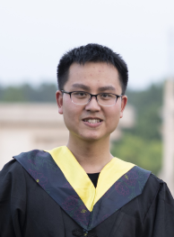
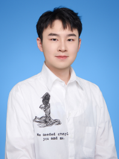

Prof. Qianqian Wang, Intelligent Small-scale Robotics Lab, Southeast
University
Qianqian Wang
Professor, School of Mechanical Engineering Southeast University
Jiangsu Key Laboratory for Design and Manufacture of Micro-Nano Biomedical
Instruments
Qianqian WANG is current a Professor at the School of Mechanical
Engineering, Southeast University (SEU), Nanjing, China. He received his
Ph.D. in Mechanical and Automation Engineering at The Chinese University of
Hong Kong (CUHK) in 2020. Before joining SEU, he was a Postdoctoral Fellow
in the Department of Mechanical and Automation Engineering at CUHK. He has
published more than 40 papers in peer-reviewed journals, including Science
Advances, Science Robotics, Nature Communications, ACS Nano and IEEE
Transactions series (T-CYBER, T-MECH, T-ASE, T-BME), and presented his work
in IEEE ICRA, IROS .etc. Several of his journal papers have been indexed as
ESI Highly Cited Papers and Hot Papers (Top 0.1%) and have been highlighted
in Nature News and international press reports. His research focuses on the
micro-/nano-robotics field, including collective behaviors of
micro/nanorobots, medical imaging-guided delivery, and micromanipulation. He
has been selected into National High-level Young Scholar Program (overseas).
Southeast University Jiulonghu Campus, Mechanical Building, Room 355.
qqwang@seu.edu.cn
News
Team
Research
Yimin Sun, who graduated with a master's degree from the School of
Mechanical Engineering at Nanjing University of Science and Technology,
joined Qianqian Wang's group in 2023, where he will spend his Ph.D. in
the areas of automated magnetic manipulation control algorithms and deep
learning.
Haoyu Zhang will join in our research club in 2024. He is currently working
toward the Eng. degree with the Southeast University, Nan Jing, China. His
research interests collective behaviors of micro/nanorobots, design and
control of swarm system.
Ying Cao
Mr. Qijun Yang joined our team in 2023. He received his Bachelor of Arts
degree in 2021 from Sichuan Normal University. His research interests in
multimodal Human-Computer interaction.
Qijun Yang
Ph.D Student
M.Eng Student
Mr. Ying Cao joined Qianqian Wang's team in 2023. He received his
Bachelor of Engineering degree from the School of Mechanical Engineering in
Hefei University of Technology in 2023. His research interests focus on
automated magnetic control of microrobots and construction of magnetic
mobile device.

Mr.JianSheng Du will join our group in 2024. JianSheng Du received his
exemption from Southeast University in 2023 afterresearch study in Mr.
Qianqian Wang'sgroup.His main research interests are ultrasound imaging
in microrobotic control.
Haoyu Zhang

Yimin Sun
" We look forward to the next person who will create the future with
us. "
" We look forward to the next person who will create the future with
us. "
Mr. Bin Wang will join our group in 2024. Mr. Bin Wang received his
exemption from Southeast University in 2023 after research study in Mr.
Qianqian Wang's group. His main research interests are magnetron 3D
printing and related applications.
Bin Wang
Mr. Yuanbiao Ma joined Qianqian Wang's team in 2023. He received his
Bachelor of Engineering degree in mechanical engineering from Hefei
University of Technology in 2023. His research interests include
magnetically controlled soft robotics and control system based on permanent
magnet.